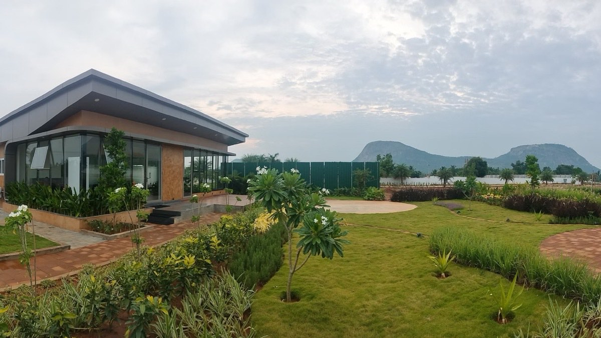

A gated plotted community near the KIADB Aerospace & Software Park.
Sold out · Approved, gated layout · M. Hosahalli, BagalurCalm, close to everything.
Serenity sits at M. Hosahalli, off the Whitefield–Airport Road near Budigere, close to one of the region's largest employment hubs. The approved, gated layout comes with its infrastructure in place, so you can build when you're ready.
Near theaerospace park.
The KIADB Aerospace & Software Park, one of the region's largest employment hubs, is a short drive away. Budigere, the proposed SEZ and Kempegowda International Airport are all within 15 km.
- KIADB Aerospace & Software ParkWorkNearby
- BudigereConnectivity2km
- Proposed SEZWork4.5km
- Kempegowda International AirportAirport15km
- HebbalConnectivity25km
Approximate distances. Rings are spaced for legibility: not to scale, and they do not show direction.
A sense ofthe community.
This is an illustrative drawing, made to give a feel for a gated community of plots. It is not Serenity's approved layout: the number, size and position of plots on site differ. Ask us for the approved layout drawing.
Built beforeit's sold.
At Serenity the infrastructure was in place before the plots were sold, and every plot has now found its owner.
- Approved layoutApprovals
- Sold outStatus
- Bank loan sanctionedFinance
- Gated with 24×7 securitySecurity
- Roads with streetlightsRoads
- Drainage, power & waterUtilities
Between the airportand Old Madras Road.
Serenity is at M. Hosahalli near Budigere, on the Budigere Road that links Old Madras Road with the airport. SAP Labs, Shell's technology centre, the KIADB Hardware and Aerospace Parks and Boeing's campus are all 3 to 7 km away by road, and the airport about 15 km.

✦ Getting around
- Budigere Road, the Old Madras Road–airport linkAt the site
- Budigere villageAbout 2.5 km
- BagalurAbout 8 km
- Satellite Town Ring Road (NH-648)About 10 km
- Old Madras Road (NH-75) at Budigere CrossAbout 13 km
- Whitefield (ITPL)About 24 km
✦ Work nearby
- SAP Labs India Innovation ParkAbout 3.5 km
- Shell Technology CentreAbout 5 km
- KIADB Hardware ParkAbout 6 km
- KIADB Aerospace Park, with Collins AerospaceAbout 6 km
- Boeing's BIETC campusAbout 6.5 km
- Air India's MRO base (under construction)About 6.5 km
✦ Neighbourhoods around
- Prestige Finsbury ParkAbout 8.5 km
- Brigade El DoradoAbout 8.5 km
- Godrej WoodscapesAbout 13 km
- Brigade OrchardsAbout 14 km
✦ Schools, colleges & care
- Government Hospital, BudigereAbout 2 km
- Sterling English Residential SchoolAbout 6.5 km
- Vikrant Hospital, BagalurAbout 9 km
- CMR University, Lakeside campusAbout 10 km
- Delhi Public School Bangalore NorthAbout 12.5 km
- REVA UniversityAbout 13.5 km
Distances are approximate road distances from the site, from OpenStreetMap routing (October 2026). The airport is about 7 km away in a straight line, but the road runs round the airfield. The airport metro line is under construction; no station is planned at Budigere or Bagalur. Names of other developments are given only to describe the area.
Off the Whitefield–Airport Road.
At M. Hosahalli, Bagalur, near Budigere. Kempegowda International Airport is about 15 km away and Hebbal about 25 km.
Seen at Montira,our flagship.
These photographs are of Montira, our villa-plot community at Nandi Hills, not of Serenity. They show the care we put into the land we develop: roads, planting and finish.



Serenity, in pictures.
Pictures of Serenity. Visit with us to see the land itself.
Approved &and sold out.
Serenity's layout is approved and the bank loan was sanctioned. Every plot has now been sold; owners can ask us for copies of their documents.
Good questions,straight answers.
Anything else you would like to know about Serenity?
Where exactly is Serenity?
Serenity is at M. Hosahalli in Bagalur, off the Whitefield–Airport Road near Budigere, near the KIADB Aerospace & Software Park. Budigere is about 2 km away, the proposed SEZ about 4.5 km, Kempegowda International Airport about 15 km and Hebbal about 25 km.
Is the layout approved?
Yes. Serenity's layout is approved and the bank loan was sanctioned. Every plot has now been sold.
What is already in place on site?
Serenity is gated with 24×7 security, and roads with streetlights, drainage, power and water are in place, so owners can build when they are ready.
Are the pictures on this page of Serenity?
No. The layout on this page is an illustrative drawing, not the approved layout. The photographs of Montira show our flagship community at Nandi Hills, and the airport picture is an illustrative stock photograph of Bengaluru. None of them are photographs of Serenity. Ask us for the approved layout drawing, or visit the site with our team.
Is anything still available at Serenity?
No. Serenity is sold out. Montira at Nandi Hills and Athena Phase II at Devanahalli are selling now. Send us a message on WhatsApp, call +91 88841 50025 or use the form on this page, and our team will show you around.
Sold out,with thanks.
Every plot at Serenity has found its owner. If you are looking for land now, Montira at Nandi Hills and Athena Phase II at Devanahalli are selling, and our team will be glad to show you around.
- Call
- Writeinfo@rareearthprojects.com
- WhatsAppMessage us directly
- SiteM. Hosahalli, Bagalur,
off the Whitefield–Airport Road near Budigere - OfficeRarearth Projects Pvt. Ltd., 2nd Floor, Ritwik Plaza,
No. 2386/2387, 60 Ft Road, Next to Cauvery Public School,
E Block, Sahakarnagar, Bengaluru 560092
Talk to us
Share a few details and our team will be in touch personally.